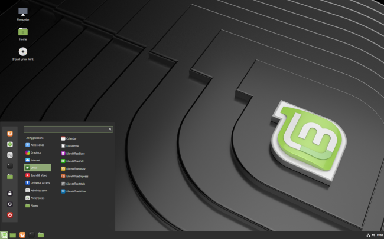

Introduction
Linux Mint is a modern, user-friendly Linux distribution designed for both beginners and experienced users. It is based on Ubuntu, one of the most popular Linux distributions, and emphasizes simplicity, stability, and ease of use. By running Linux Mint on a Virtual Machine (VM), users can explore and work with Linux without making permanent changes to their existing system. This approach is particularly useful for development, testing, or learning purposes.
What is Linux Mint?
Linux Mint is an open-source operating system that provides a powerful alternative to Windows or macOS. It features a clean and intuitive interface, pre-installed software for everyday tasks, and excellent community support. It is widely appreciated for its focus on:
- Ease of Use: A familiar desktop environment and user-friendly features.
- Stability: Built on Ubuntu, ensuring long-term support and reliability.
- Customization: Users can tailor their systems to meet specific needs.
Popular versions of Linux Mint include desktop environments like Cinnamon (default), MATE, and Xfce. This guide uses the Cinnamon edition, known for its balance of features and performance.
Why Use Linux Mint on a Virtual Machine?
- Safe Experimentation: You can try Linux Mint without altering your primary operating system or risking data loss.
- Convenience: Easily switch between Linux Mint and your host operating system.
- Learning: Explore Linux commands, configurations, and applications in an isolated environment.
Prerequisites
1. Hardware Requirements
To run Linux Mint on a virtual machine, your system needs to meet the following hardware specifications. These are typical for most modern computers, but you should verify your system's capabilities to avoid any performance issues.
- Processor (CPU): A 64-bit processor is required to run Linux Mint and VirtualBox. Most modern processors from Intel and AMD (e.g., Intel Core i3/i5/i7 or AMD Ryzen series) are suitable.
Tip: Check if your CPU supports virtualization (Intel VT-x or AMD-V) in the BIOS settings. - RAM (Memory):
✔ Minimum: 4 GB
✔ Recommended: 8 GB or more
The more RAM you allocate to the virtual machine, the better the performance. However, leave some RAM for your host system (your main operating system). - Storage (Hard Drive Space):
✔ Minimum: 20 GB free space
✔ Recommended: 40 GB or more
Virtual machines need disk space for both the virtual operating system (Linux Mint) and any applications you plan to install. Allocate sufficient space for smooth operation. - Graphics: Any modern integrated or dedicated graphics card should work fine. VirtualBox provides basic graphics acceleration, but high-end graphics are not a priority for Linux Mint on a VM unless you plan to run graphically intensive applications.
2. Software Requirements
You’ll need to install the following software on your host system to be able to create and manage the virtual machine and install Linux Mint.
- Virtualization Software:
✔ VirtualBox (recommended): VirtualBox is a free and open-source tool for creating and managing virtual machines.
✔ Download from the official website: VirtualBox Downloads.
✔ Alternative: VMware Workstation Player (also free) can be used, but the steps in this guide assume VirtualBox. - Linux Mint ISO File: You need the installation file for Linux Mint in ISO format. The latest version can be downloaded from the official Linux Mint website.
✔ Download Link: Linux Mint Download Page.
✔ Select the desired desktop environment (Cinnamon, MATE, or Xfce) and download the ISO. Cinnamon is the most popular and offers the most modern experience. - Host Operating System: Your host system can be any modern operating system such as:
✔ Windows: Windows 7, 8, 10, or 11.
✔ macOS: Any version that supports VirtualBox.
✔ Linux: Any major Linux distribution (Ubuntu, Fedora, etc.). - Internet Connection: While not strictly required for installation, an internet connection is recommended for downloading updates, additional software, and VirtualBox Guest Additions for better performance.
3. BIOS Settings (for Virtualization)
To run a virtual machine, virtualization technology (VT-x for Intel or AMD-V for AMD processors) must be enabled in the BIOS of your laptop or desktop. This feature is often disabled by default but can be easily turned on.
- Restart your laptop/PC and enter BIOS or UEFI settings (press a key such as Esc, F2, F10, or Del during startup — this varies by manufacturer).
- In the BIOS menu, look for a setting named Intel Virtualization Technology, Intel VT-x, AMD-V, or something similar under Advanced, CPU Configuration, or System Configuration.
- Enable the setting and save changes before exiting BIOS.
- Your system will now be able to run VirtualBox and other virtualization tools.
4. Backup Important Data
Before starting the installation of any new system, including running Linux Mint on a VM, it's always a good idea to back up important files on your host system. While this guide will not affect your main operating system, it's a precautionary step to avoid data loss during the setup process.
Summary of Prerequisites
- Hardware: 64-bit CPU, at least 4 GB of RAM (8 GB recommended), 20 GB free storage space.
- Software: Download and install VirtualBox and Linux Mint ISO file.
- BIOS: Enable virtualization in your system's BIOS settings.
- Backup: Always back up important files before proceeding.
- Internet: Recommended for downloading updates and software during installation.
Troubleshooting
If you encounter any issues while using Linux Mint in a Virtual Machine (VM), here are common problems and their solutions:
1. VM Won't Start or Freezes on Boot:
- ✔ Check VirtualBox Settings: Ensure the VM’s settings have enough allocated resources (CPU and RAM). If it's too low, the system may fail to boot.
- ✔ Enable Virtualization: In your computer’s BIOS/UEFI, make sure Intel VT-x or AMD-V is enabled for virtualization. This can improve VM performance and allow smoother operation.
- ✔ Reinstall Linux Mint: If the issue persists, try reinstalling the OS or using a different ISO file.
2. Low Performance (Lag or Slowness):
- ✔ Increase Resources: Allocate more RAM and CPU cores to your VM. Open VirtualBox, right-click the VM, go to Settings > System, and increase the available resources.
- ✔ Enable 3D Acceleration: If you experience slow graphics, go to Settings > Display in VirtualBox and enable 3D acceleration.
- ✔ Optimize VM Storage: If the virtual hard disk is too small or fragmented, it can affect performance. Increase the size of the virtual disk or consider using a fixed-size disk instead of dynamically allocated storage.
3. No Internet Connection:
- ✔ Check Network Settings: In VirtualBox, ensure the network adapter is set correctly. You can choose either NAT (for automatic internet access) or Bridged (for a direct connection to the host network).
- ✔ Restart Network Services
- ✔ Reinstall Network Drivers: Check if the correct drivers are installed for your network device via the Driver Manager in Linux Mint.
4. Display Issues or Resolution Problems:
- ● Install VirtualBox Guest Additions: This is necessary for better graphics and resolution scaling.
Steps:
1. Start the VM.
2. In VirtualBox, go to Devices > Insert Guest Additions CD image.
3. Follow the on-screen instructions in Linux Mint to install the Guest Additions. - ● Adjust Screen Resolution: After installation, you may need to adjust the resolution in System Settings > Display.
5. Shared Folders Not Working:
- ✔ Install VirtualBox Guest Additions: As with display issues, shared folders require Guest Additions to function properly. Ensure they are installed.
- ✔ Enable Folder Sharing: In VirtualBox, go to Settings > Shared Folders, and configure the folder you want to share. Be sure to mount it correctly in Linux Mint.
- ✔ Check Permissions: Make sure the shared folder has proper read/write permissions for your user account.
6. Audio Not Working:
- ✔ Check Sound Settings: Inside Linux Mint, open System Settings > Sound and ensure the correct output device is selected.
- ✔ Reinstall Audio Drivers: In some cases, audio issues can be fixed by reinstalling or updating sound drivers through the Driver Manager.
- ✔ Enable Audio in VirtualBox: Ensure that the audio device is enabled in the Settings > Audio section of VirtualBox.
7. Frozen System or Unresponsive Mouse/Keyboard:
- ✔ Use Host Key: If your mouse or keyboard becomes trapped in the VM, press the Host Key (usually the Right Ctrl key) to release control.
- ✔ Force Shutdown: If the system is unresponsive, you can force the VM to shut down by selecting the VM in VirtualBox and clicking Close > Power off. However, this may result in data loss, so it’s best used as a last resort.
Conclusion
Setting up and using Linux Mint in a Virtual Machine (VM) offers a flexible and secure environment to explore, test, and develop on the Linux operating system without affecting your primary system. With proper troubleshooting, you can resolve common issues and enjoy a smooth Linux experience in a virtualized setup.
